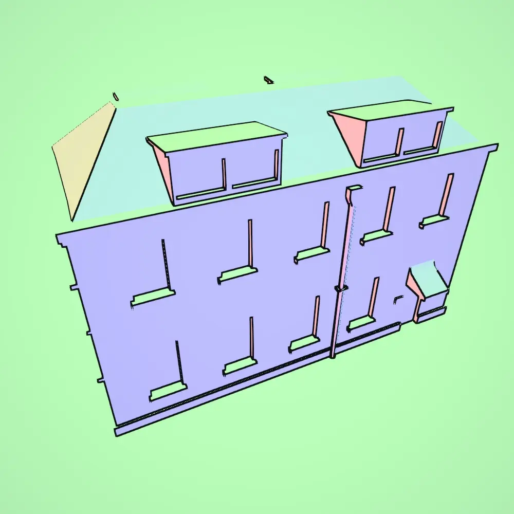
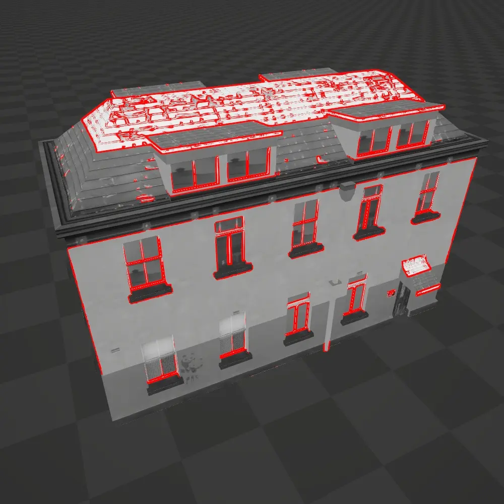
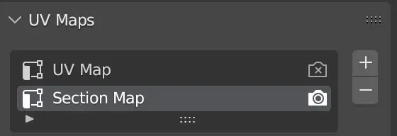
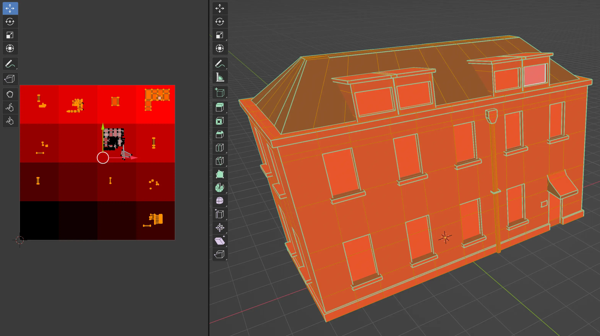

Edge Detection renders outlines by detecting edges and discontinuities within the scene, such as differences in depth, normal vector, color, or custom input buffers. This process creates a consistent outline effect that is applied uniformly across the entire scene, making it suitable for both external and internal object boundaries.

Advantages
- Consistent Outline: As a screen-space effect, the outline is uniformly applied across the whole scene, ensuring a consistent look.
- Inner Lines: The effect is able to capture both internal lines as lines on the outside of objects.
Disadvantages
- Object Exclusion: It’s challenging to exclude specific objects or customize the outline effect for individual objects.
- Performance: This is a screen-space effect that runs for the whole screen.
Configuration
The Edge Detection Settings object contains the settings related to this outline effect. Here are all of the settings explained. In Unity, each setting also has a tooltip which shows more information.
General Settings The general settings apply to the outline effect as a whole.
| Setting | Description | Additional Information |
|---|---|---|
| Stage | Controls when the render pass executes. | |
| Show In Scene View | Sets whether to render the pass in the scene view. | |
| Debug | Which stage to render as a debug view. |
Discontinuity Settings
| Setting | Description | Additional Information |
|---|---|---|
| Sources | Which inputs to use as discontinuity sources for the edge detection. | See the Discontinuity Sources section below for more information. |
| Setting (Depth) | Description | Additional Information |
|---|---|---|
| Sensitivity | The sensitivity used to detect the discontinuity in depth. | |
| Distance Mask | Adjust how sensitive the edge detection is to changes in depth based on the distance from the camera. | |
| Sharp Angle Mask | Helps prevent edges from being falsely detected when the camera views a surface at a shallow angle. | |
| Sharp Angle Mask Multiplier | Helps prevent edges from being falsely detected when the camera views a surface at a shallow angle. |
| Setting (Normals) | Description | Additional Information |
|---|---|---|
| Sensitivity | The sensitivity used to detect the discontinuity in normal vector. |
| Setting (Luminance) | Description | Additional Information |
|---|---|---|
| Sensitivity | The sensitivity used to detect the discontinuity in luminance. |
| Setting (Section Map) | Description | Additional Information |
|---|---|---|
| Layer | The rendering layer(s) which will get rendered to the section map. | |
| Object ID | Whether to render each object with a unique ID to the section map. | |
| Input | The additional input used for the section map. | |
| Channel | Which vertex color channel to render to the section map. | |
| Texture | Which texture to sample when rendering to the section map. | |
| UV Set | Which UV set to use when sampling the section texture. | |
| Keyword | Which keyword to enable during the rendering of the section map. | |
| Shader | Which shader to use to render to the section map. |
Outline Settings
| Setting | Description | Additional Information |
|---|---|---|
| Kernel | The kernel that is used to detect edges. | |
| Width | The width of the outline. | |
| Color | The color of the outline. | |
| Override Shadow | The color of the outline when it is in an area that lies within a shadow. | |
| Fill Color | The color of the outline for fill in regions in the section map. | |
| Blend | How to blend the outline with the rest of the scene. |
Discontinuity Sources
The Edge Detection effect is able to use a combination of discontinuity sources to determine where a line should be drawn.
Given a scene, a combination of the following discontinuity sources may be used.
Depth The depth of each fragment in the scene. Works well to get the silhouettes of objects.

Normals The orientation of each fragment in the scene. Works well to get fine details in objects if they have a different orientation.

Luminance The luminance of each fragment in the scene. Works well to pick up on differences in color/brightness between surfaces, even if they have the same orientation.

Combined By combining depth, normals and luminance, the outlines come out like this.

Section Map (Advanced Usage)
Advanced Usage
The Section Map is a powerful feature that may be used for rendering outlines. However, be sure that you read the documentation carefully. If things do not work out of the box or you have questions, Contact me. Thanks!
Section Map
The Section Map is a special texture that is generated during the rendering process and used by the edge detection shader to determine where to draw edges. The section map uses only the R channel. Additionaly, there are 2 special values that the section map may have.
0.0 = mask → no lines will be drawn 1.0 = fill → a special Fill Color will be drawn
When using Vertex Colors or a Section Texture as explained below, be sure to note that values of 0 will be used as a mask, and values of 1 will be used as a fill.
The Section Map allows us to introduce additional information for the edge detection shader to use, without adding additional geometry. Some examples:
Object ID
Each object is rendered to the Section Map using an unique ID. Works well to render outlines between objects. No manual control is possible, everything is generated based on world position.


Vertex Colors
The vertex colors of an object may be rendered to the section map. This gives nearly complete control over outlines. The only limitation is that the necessary geometry needs to be present in order to paint it. This method is able to generate very clean outlines. As explained above, be sure to note that values of 0 will be used as a mask, and values of 1 will be used as a fill.


Section Texture
In this mode, a dedicated Section Texture is sampled and used to render to the section map. This gives very fine control over outlines. Again, keep in mind that a value of 0.0 = mask and 1.0 = fill.
In the settings of the Section Map you can choose
- The Section Texture that will be sampled.
- The UV Set that will be used to sample the texture. This allows you to have a different UV set specifically for your section texture.
- The Channel that will be sampled.

Within the package, there is a section_texture.png which is recommended for you to use. It contains a 4x4 palette in tints of red. The bottom left value is 0.0 = mask and the top left is 1.0 = fill.

In your 3D modelling program, you can set up a secondary UV map.

You can then UV map your mesh so that surfaces that should have an edge between, have a different color in the palette. 
Then in Unity you can choose which UV set to use.
As explained above, be sure to note that values of 0 will be used as a mask, and values of 1 will be used as a fill.


The Section Texture method involves a bit more work than the Vertex Colors method.
Keyword
The Keyword method is yet another technique to render to the section map. Before rendering to the section map, the _SECTION_PASS keyword is enabled. After, the keyword is disabled again. This makes it possible to add a _SECTION_PASS switch at the end of your shaders so you can output whatever you want to the section map.
In the example below I output a pattern of stripes.

This gives us the following section map and result.


As explained above, be sure to note that values of 0 will be used as a mask, and values of 1 will be used as a fill.
The Keyword method leaves everything to you. You can output anything you want, irregardless of the geometry of your mesh.
What option to choose?
Let’s summarize all the options of outputting to the section map.
Vertex Color: Easiest to use. You could make/use tools that randomly assign a color to a face.
Vertex Color Tooling
You could use something like IDMapper (I have not tested this personally!) to make it easier to assign vertex colors quickly
Section Texture: More setup involved since you need to make a secondary UV map. This also requires you to come up without some kind of method/system so that faces next to each other, don’t use the same color.
Keyword: Use this if you have very specific needs of certain patterns that should be shown, independent of the geometry of your mesh.
Anti-aliasing
TODO: check “MSAA will not apply to the edges, since the depth texture is remains aliased. Post processing AA methods do have an effect.” TODO: check “An edge has a minimum thickness of 1 pixel. This means at lower resolutions, edges will appear thicker. For instance, in the scene-view window”